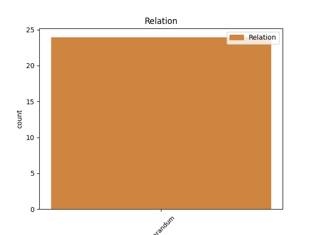
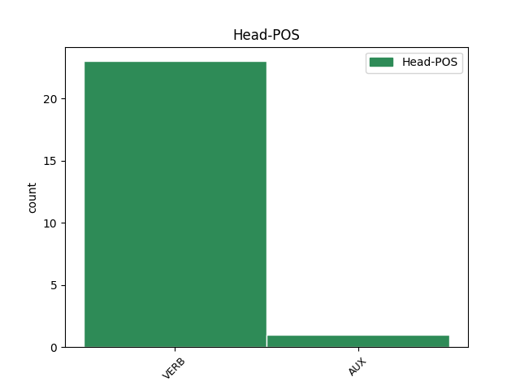
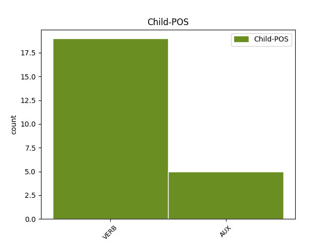

Distribution of features within this leaf



Agreement Rules sorted by frequency.
- When the dependent token is the overridden disfluency(reparandum) of the head token, and the dependent token is VERB.
1 saj _ _ _ _ 0 _ _ _
2 samo _ _ _ _ 0 _ _ _
3 to _ _ _ _ 0 _ _ _
4 je _ _ _ _ 0 _ _ _
5 samo _ _ _ _ 0 _ _ _
6 to _ _ _ _ 0 _ _ _
7 je _ _ _ _ 0 _ _ _
8 fora _ _ _ _ 0 _ _ _
9 tega _ _ _ _ 0 _ _ _
10 ne _ _ _ _ 0 _ _ _
11 moramo _ _ _ _ 0 _ _ _
12 narediti _ _ _ _ 0 _ _ _
13 dokler _ _ _ _ 0 _ _ _
14 se _ _ _ _ 0 _ _ _
15 ne _ _ _ _ 0 _ _ _
16 menimo meniti VERB Vmpr1p Aspect=Imp|Mood=Ind|Number=Plur|Person=1|Tense=Pres|VerbForm=Fin 17 reparandum _ msd=Ggnspm|word=menmo
17 zmenimo zmeniti VERB Vmer1p Aspect=Perf|Mood=Ind|Number=Plur|Person=1|Tense=Pres|VerbForm=Fin 0 _ _ _
18 z _ _ _ _ 0 _ _ _
19 [name:personal] _ _ _ _ 0 _ _ _
20 [gap] _ _ _ _ 0 _ _ _
1 ki _ _ _ _ 0 _ _ _
2 jo _ _ _ _ 0 _ _ _
3 boste biti AUX Va-f2p-n Mood=Ind|Number=Plur|Person=2|Polarity=Pos|Tense=Fut|VerbForm=Fin 4 reparandum _ msd=Gp-pdm-n|word=borte
4 boste biti AUX Va-f2p-n Mood=Ind|Number=Plur|Person=2|Polarity=Pos|Tense=Fut|VerbForm=Fin 0 _ _ _
5 mogli _ _ _ _ 0 _ _ _
6 opraviti _ _ _ _ 0 _ _ _
7 če _ _ _ _ 0 _ _ _
8 boste _ _ _ _ 0 _ _ _
9 to _ _ _ _ 0 _ _ _
10 nalogo _ _ _ _ 0 _ _ _
11 opravili _ _ _ _ 0 _ _ _
Disagree Examples:
1 [incident] _ _ _ _ 0 _ _ _
2 pa _ _ _ _ 0 _ _ _
3 imate imeti VERB Vmpr2p-n Aspect=Imp|Mood=Ind|Number=Plur|Person=2|Polarity=Pos|Tense=Pres|VerbForm=Fin 5 reparandum _ msd=Ggnsdm-n|word=mate
4 pa _ _ _ _ 0 _ _ _
5 imajo imeti VERB Vmpr3p-n Aspect=Imp|Mood=Ind|Number=Plur|Person=3|Polarity=Pos|Tense=Pres|VerbForm=Fin 0 _ _ _
6 vsi _ _ _ _ 0 _ _ _
7 cajt _ _ _ _ 0 _ _ _
8 ker _ _ _ _ 0 _ _ _
9 ti _ _ _ _ 0 _ _ _
10 to _ _ _ _ 0 _ _ _
11 bolj _ _ _ _ 0 _ _ _
12 veš _ _ _ _ 0 _ _ _
13 meni _ _ _ _ 0 _ _ _
14 se _ _ _ _ 0 _ _ _
15 sploh _ _ _ _ 0 _ _ _
16 ne _ _ _ _ 0 _ _ _
17 ljubi _ _ _ _ 0 _ _ _
18 več _ _ _ _ 0 _ _ _
19 pisati _ _ _ _ 0 _ _ _
20 okrog _ _ _ _ 0 _ _ _
1 a _ _ _ _ 0 _ _ _
2 to _ _ _ _ 0 _ _ _
3 čakajte _ _ _ _ 0 _ _ _
4 to _ _ _ _ 0 _ _ _
5 imamo _ _ _ _ 0 _ _ _
6 a _ _ _ _ 0 _ _ _
7 to _ _ _ _ 0 _ _ _
8 to _ _ _ _ 0 _ _ _
9 mislite _ _ _ _ 0 _ _ _
10 tisto _ _ _ _ 0 _ _ _
11 kar _ _ _ _ 0 _ _ _
12 je biti VERB Va-r3s-n Mood=Ind|Number=Sing|Person=3|Polarity=Pos|Tense=Pres|VerbForm=Fin 21 reparandum _ msd=Gp-ste-n|word=je
13 eee _ _ _ _ 0 _ _ _
14 kar _ _ _ _ 0 _ _ _
15 kar _ _ _ _ 0 _ _ _
16 kar _ _ _ _ 0 _ _ _
17 prek _ _ _ _ 0 _ _ _
18 kar _ _ _ _ 0 _ _ _
19 prek _ _ _ _ 0 _ _ _
20 televizije _ _ _ _ 0 _ _ _
21 naročiš naročiti VERB Vmer2s Aspect=Perf|Mood=Ind|Number=Sing|Person=2|Tense=Pres|VerbForm=Fin 0 _ _ _
22 pa _ _ _ _ 0 _ _ _
23 gledaš _ _ _ _ 0 _ _ _
24 t _ _ _ _ 0 _ _ _
25 [gap] _ _ _ _ 0 _ _ _
26 eee _ _ _ _ 0 _ _ _
27 filme _ _ _ _ 0 _ _ _
28 a _ _ _ _ 0 _ _ _
29 [gap] _ _ _ _ 0 _ _ _
30 nekaj _ _ _ _ 0 _ _ _
31 takega _ _ _ _ 0 _ _ _